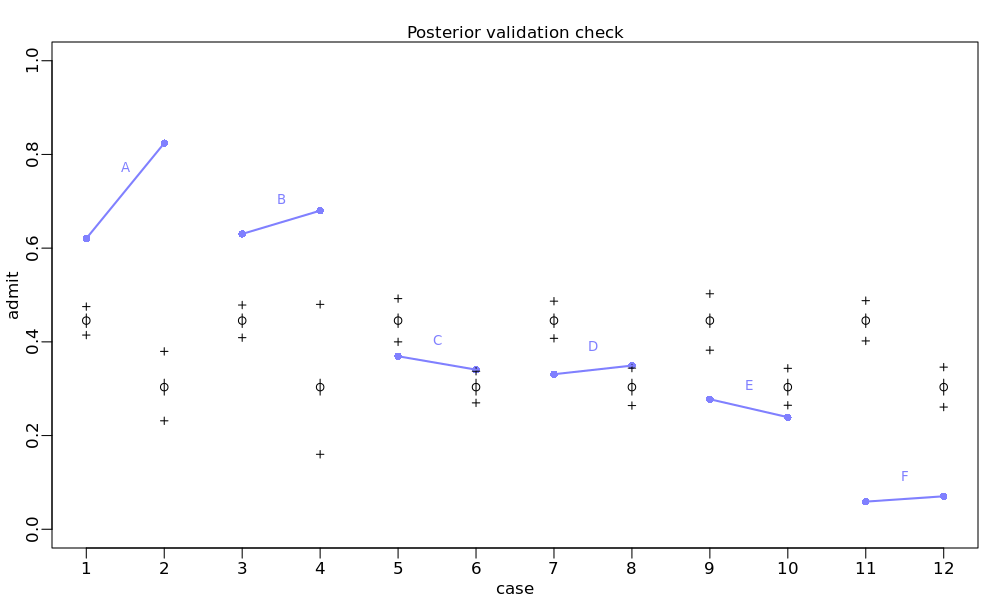
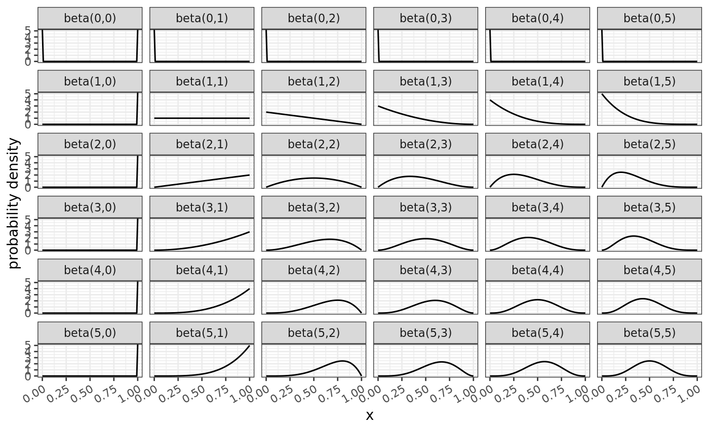
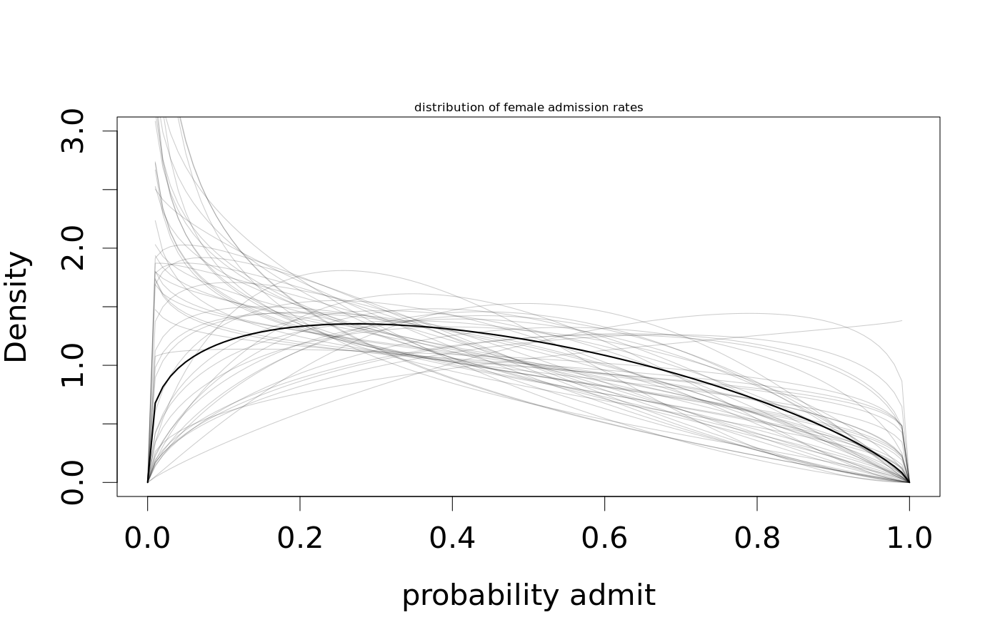
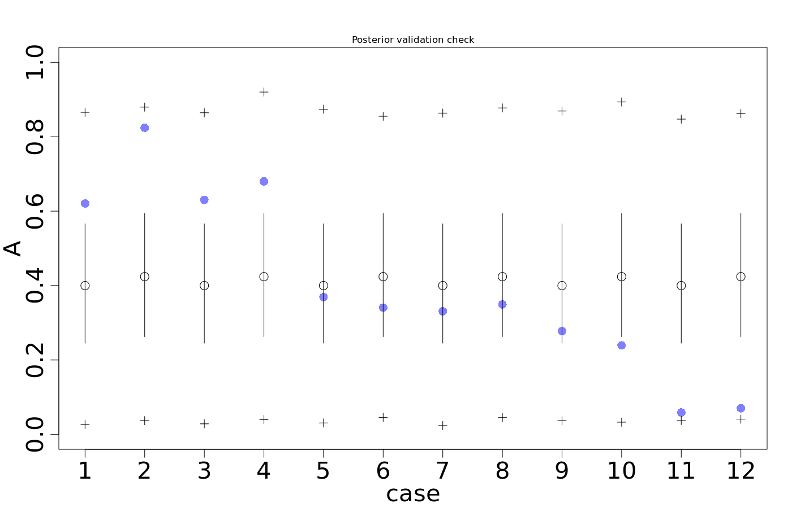

| dept | applicant.gender | admit | reject | applications | gid |
|---|---|---|---|---|---|
| A | male | 512 | 313 | 825 | 1 |
| A | female | 89 | 19 | 108 | 2 |
| B | male | 353 | 207 | 560 | 1 |
| B | female | 17 | 8 | 25 | 2 |
| C | male | 120 | 205 | 325 | 1 |
| C | female | 202 | 391 | 593 | 2 |
| D | male | 138 | 279 | 417 | 1 |
| D | female | 131 | 244 | 375 | 2 |
| E | male | 53 | 138 | 191 | 1 |
| E | female | 94 | 299 | 393 | 2 |
| F | male | 22 | 351 | 373 | 1 |
| F | female | 24 | 317 | 341 | 2 |
 * The data are overdispersed, compared to the model * Binomial distribution: mean = \(Np\), standard deviation = \(\sqrt{Np(1-p)}\)
Model:
predicted_draws(mdl_gs, newdata = dat_list) %>%
group_by(gid) %>%
summarize(mean = mean(.prediction / applications),
sd = sd(.prediction / applications)) %>%
kable(digits = 2)| gid | mean | sd |
|---|---|---|
| 1 | 0.45 | 0.03 |
| 2 | 0.30 | 0.05 |
Data:
dat_list %>%
group_by(gid) %>%
summarize(mean = mean(admit / applications),
sd = sd(admit / applications)) %>%
kable(digits = 2)| gid | mean | sd |
|---|---|---|
| 1 | 0.38 | 0.22 |
| 2 | 0.42 | 0.28 |
Standard deviation in the data is 5–7 times greater than the model predicts.

dat_list <- select(d, A = admit, N = applications, gid)
mdl_gs_bb <- ulam(
alist(
A ~ dbetabinom(N, pbar, theta),
logit(pbar) <- a[gid],
a[gid] ~ dnorm(0, 1.5),
transpars> theta <<- phi + 2.0,
phi ~ dexp(1)
), data =dat_list, chains = 4, cores = 4 )post <- extract.samples(mdl_gs_bb)
post$da <- post$a[,1] - post$a[,2]
precis_show(precis(mdl_gs_bb, depth = 2, digits = 2))## mean sd 5.5% 94.5% n_eff Rhat4
## a[1] -0.42 0.43 -1.12 0.27 1601 1.00
## a[2] -0.32 0.44 -1.03 0.38 1138 1.01
## phi 1.01 0.83 0.08 2.54 1556 1.00
## theta 3.01 0.83 2.08 4.54 1556 1.00

Generate data
Make the model
Analyze the results
## mean sd 5.5% 94.5% n_eff Rhat4
## ap -1.44 0.35 -2.05 -0.97 628 1.01
## al 0.08 0.08 -0.05 0.20 686 1.01## [1] 0.2## [1] 1.09A boxcar is rolling down some train tracks out of control. Five people are in the way Dennis can pull a lever and send the boxcar down a different track, which will save the five people but kill one other person.
Set up the data
The model
mdl_boxcar <- ulam(
alist(
R ~ dordlogit(phi, cutpoints),
phi <- bA * A + bC * C + BI * I,
BI <- bI + bIA * A + bIC * C ,
c(bA,bI,bC,bIA,bIC) ~ dnorm(0, 0.5),
ordered[6]: cutpoints ~ dnorm(0, 1.5)
), data=dat, chains=4, cores=4)c(bA,bI,bC,...) instead of one line for each
parameter.ordered[6]: cutpoints ~ dnorm(0, 1.5) tells
ulam that there are 6 cutpoints (if there are \(k\) levels to the outcome variable, then
there must be \(k-1\) cutpoints between
them), and that they are ordered so \(\text{cutpoints}_1 < \text{cutpoints}_2 <
\cdots < \text{cutpoints}_k\)
Analysis results
## mean sd 5.5% 94.5% n_eff Rhat4
## bIC -1.24 0.09 -1.39 -1.09 1173 1
## bIA -0.44 0.08 -0.56 -0.32 1089 1
## bC -0.34 0.07 -0.45 -0.23 1099 1
## bI -0.29 0.06 -0.38 -0.20 950 1
## bA -0.47 0.05 -0.55 -0.39 883 1